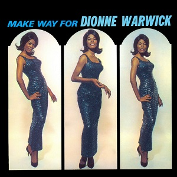
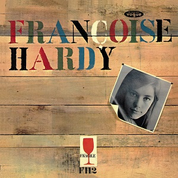

1964: Albums of the Year
-
Bob Dylan
Another Side of Bob Dylan
7
-
Bob Dylan
The Times They Are A-Changin’
6¾
-
Stan Getz / João Gilberto
Getz / Gilberto
6½
-
The Beatles
A Hard Day’s Night
6¼
-
Herbie Hancock
Empyrean Isles
6
-
The Ronettes
Presenting The Fabulous Ronettes Featuring Veronica
5¾
-
The Rolling Stones
The Rolling Stones
5¾
-
Serge Gainsbourg
Confidentiel
5½
-
John Coltrane
Coltrane’s Sound
5¼
-
The Kinks
Kinks
5¼
-
Otis Redding
Pain in My Heart
5
-
Dusty Springfield
A Girl Called Dusty
4¾
-
Johnny Cash
I Walk the Line
4½
-
The Beatles
Beatles for Sale
4¼
-
Serge Gainsbourg
Gainsbourg Percussions
4
-
John Coltrane Quartet
Crescent
3½
-
Simon & Garfunkel
Wednesday Morning, 3 AM
3½
-
Dionne Warwick
Anyone Who Had a Heart
3½
-
Herbie Hancock
Inventions & Dimensions
3¼
-

Dionne Warwick
Make Way for Dionne Warwick
3¼
-
France Gall
France Gall
3
-
Bill Evans Trio
How My Heart Sings!
2¾
-
John Coltrane
The Believer
2¾
-
Herbie Mann / The Bill Evans Trio
Nirvana
2¾
-

Nina Simone
Broadway Blues Ballads
2¾
-

Françoise Hardy
Mon Amie la Rose
2½
-
France Gall
No 2
2½
-
Monica Zetterlund / Bill Evans
Waltz for Debby
2½
-
Sam “The Man” Taylor
Somewhere in the Night
2¼
-
Johnny Cash
Bitter Tears: Ballads of the American Indian
2¼
-
Brigitte Bardot
B.B.
2
-
Wes Montgomery
Fusion!
2
-
Bill Evans
Trio 64
2
-
John Coltrane
Black Pearls
1¾
-

Mina
Mina
1¼
-
Stevie Wonder
Stevie at the Beach
0¾